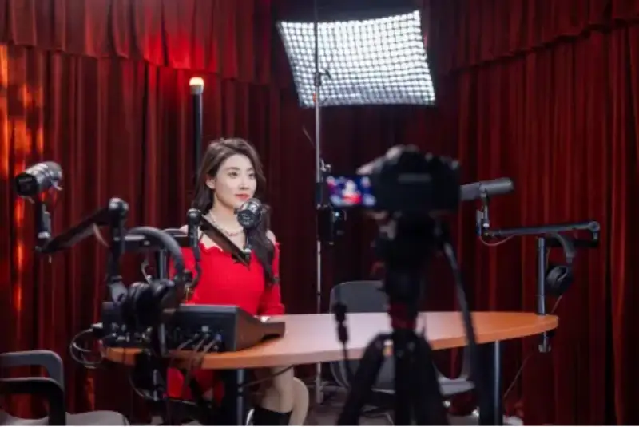
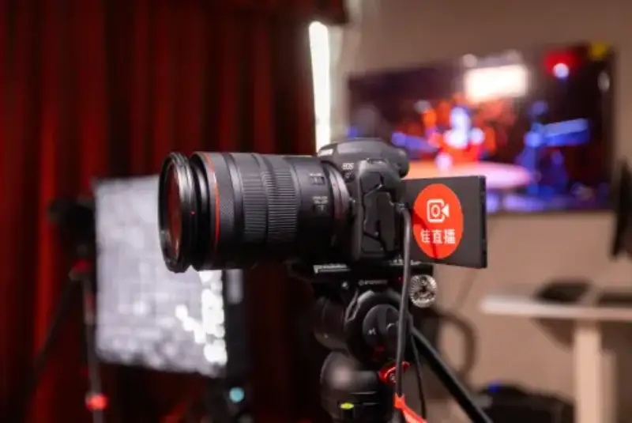
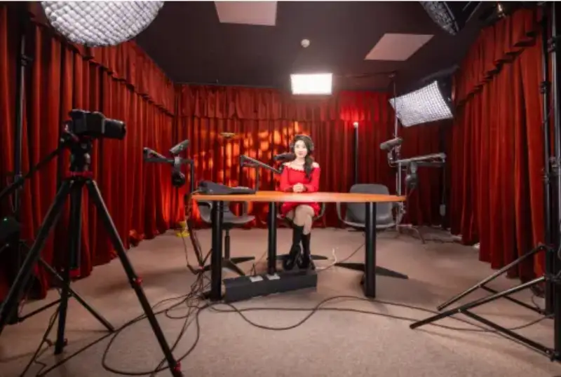
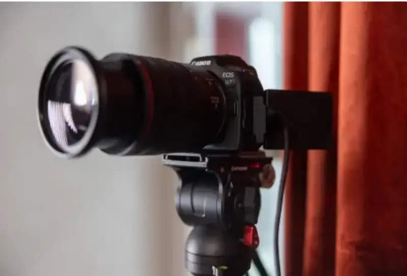
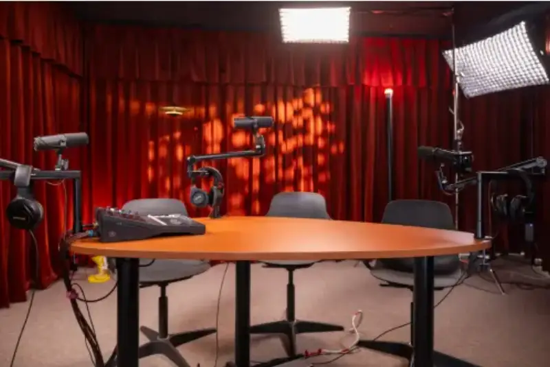
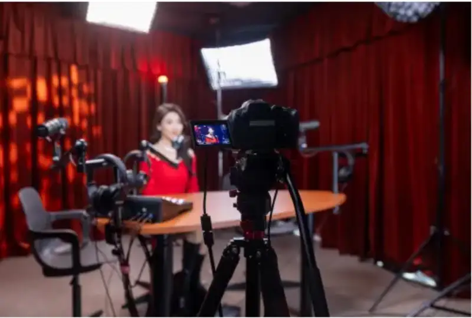
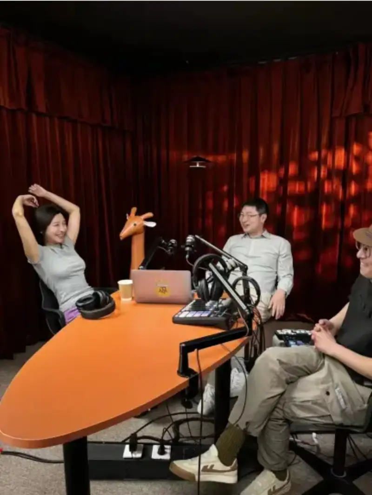

Published: 2024-05-22
Source link: https://www.cnphotos.net/academy/show-175.html
In the digital age, podcasts are growing fast around the world as a new form of media. As podcasts become more commercial, they are likely to link more closely with video, which brings more value to the industry and to brands. To push the podcast industry toward video, Canon Jia Zhi Bo and the CPA Chinese Podcast Association have formed a partnership. They built an all-in-one recording and live-streaming solution for podcasts. Together they opened a high-standard studio in the CPA podcast room in Beijing. The studio is designed for the shift to video podcasts, and it meets the needs of both program recording and live streaming. The new space gives more creators a chance to join the move toward video podcasts.
CPA is a professional Chinese podcast community. It has long followed the change and future trends of the Chinese podcast world. As early as the Podcast Marketing White Paper 2024, released in November 2023, CPA predicted the move toward video podcasts. Ai Yong, a co-founder of CPA, says more video creators are starting to make podcasts. Many podcast creators who focused on audio are also upgrading their content to video, and sharing it on platforms such as WeChat Channels, Bilibili, and Xiaohongshu.

Jia Zhi Bo and the CPA Chinese Podcast Community Studio
Objectively, moving from audio to video has a clear equipment barrier. Many podcast creators do not know video equipment, let alone lighting or how to connect the devices. To solve this pain point, the partnership between CPA and Jia Zhi Bo offers an easy-to-use, professional studio. It lets podcast creators join the move to video podcasts without a steep learning curve.
Jia Zhi Bo is the solution brand that Canon China offers to the live-streaming market. Canon has long focused on professional imaging products and solutions. Its Canon color science and dual-pixel autofocus are widely recognized around the world. The Jia Zhi Bo solution sets up a live room. It is a one-stop, high-image-quality service that covers visual guidance, link design, equipment setup, installation, tuning, remote support, and rental. The equipment covers digital cinema cameras, integrated cameras, professional camcorders, full-frame mirrorless cameras, and compact mirrorless cameras, with a wide choice of bodies and lenses, plus switchers and software. It also works with brands such as Aputure, Blackmagic Design, and SHURE. Together they form a complete, high-quality professional streaming solution. It meets needs from entry-level web, e-commerce, and entertainment streams, to weddings, corporate, education, and event streams, and even to broadcast media and large sports events.

All three camera positions in the studio use the Canon EOS R7 mirrorless camera
In this partnership, Jia Zhi Bo gave CPA services that cover live-room design, installation, tuning, and visual guidance. The newly rebuilt video podcast space is now in the CPA Beijing office in Sanlitun.
Ai Yong, a co-founder of CPA, had many reasons for this video podcast studio. First, he wanted a studio that one to four hosts can use at the same time. CPA research shows that about 25 percent of podcast creators do recording and editing alone. Close to 60 percent still work in small teams, usually two to four colleagues or friends. Second, a podcast is at heart an equal dialogue. He wanted the studio to show an atmosphere of equal talk, so each guest can speak freely in front of the camera and share their views in a relaxed chat. Finally, he thought about the end user. The user moves from being a listener to being a viewer, but they still care about the content itself. So he wanted the design of the space not to steal the focus.
In the design, Jia Zhi Bo broke the usual office layout. The main look of the studio uses a low, calm, and versatile dark brown. The ceiling is painted dark gray over a large area. Three walls are dressed with thick, velvet brown-red curtains. This keeps the look unified and also improves sound insulation. The floor uses a khaki carpet with a slight texture. Lighting then builds contrast, so even a small space shows layers.

The main look of the studio is dark brown
The Jia Zhi Bo HD streaming solution: ready on power on
In digital content creation, podcasts, with their unique sound, have become a key bridge between creators and listeners. But when podcast creators shift to video, they often face a series of challenges. Podcast creators are used to focusing on content behind a microphone. Video creation asks them to face a camera, and that is a big challenge by itself. On top of that, professional video and lighting equipment is a high barrier for many podcasts, because it comes with a high learning cost and a longer production cycle. The complexity of these devices, plus editing, compositing, and grading, often slows down content output.
Zhao Yingjun, project manager for Jia Zhi Bo at Canon China, explains the design: 'We built the live room with three Canon EOS R7 cameras: one main position and two close-up positions, plus lighting. This delivers the ready-on-power-on idea. It means the prep work before a recording or stream is much simpler, with no tedious device setup. This design lets creators get into work faster, and focus on the content they do best. The live room is not large, so we placed the camera positions against the wall as much as possible, to reduce the pressure on the hosts.'
Imaging solution: three positions for multi-person streaming
The imaging solution is three APS-C mirrorless EOS R7 cameras. The EOS R7 is light and compact. Compared with long, heavy gear, its small body removes some of the fear hosts feel in front of the camera. The EOS R7 also uses Canon's strong portrait skin tone, so hosts look natural and good on camera. It is easy to control and stable over long shoots. One EOS R7 with an RF15-35mm F2.8 L IS USM lens handles the wide position. The other two EOS R7 cameras, with RF24-105mm F4 L IS USM lenses, handle single-guest close-ups. They focus on the guest's face, strengthen the emotional force, and make viewers feel close and involved. This setup keeps the frame rich, even when four people record or stream at once.

All three positions use the Canon EOS R7 mirrorless camera
Audio solution: bring out the charm of the voice
As a talk show, sound quality always matters, whether the show is audio or video. Jia Zhi Bo worked with SHURE to bring a professional audio solution. Because the studio can hold up to four people, they used the SHURE SM7dB dynamic microphone. Its predecessor, the SM7B, is seen as the industry standard for broadcast, studios, and podcasts. The SM7dB keeps the SM7B sound and adds a built-in preamp for enough gain. Most important, it needs little from the recording room, so it picks up less background noise. The studio also gives each host a SHURE SRH840A closed-back headphone for monitoring. Each host can hear their own voice or the others at any time, which forms a convenient multi-person podcast solution.

The audio solution uses an SM7dB microphone with SRH840A monitoring headphones
Lighting solution: recall many setups with one tap
For lighting, Jia Zhi Bo and Aputure also kept it simple. Fill light, top light, and ambient light make each host look more three-dimensional. The studio also has several lighting setups. With a control app, you do not need to remember the parameters, and you can recall each setup with one tap. With a Blackmagic Design ATEM Mini Pro switcher, you can cut easily between the wide position and the single-person position. Video signals travel through Ugreen HDMI cables, and a computer pushes the stream, which completes a full, professional live or recorded show.

A host testing the live stream
Ai Yong is very happy with the result: 'We have done the first round of recording tests. The overall image, sound, and mood are all very good. What strikes me most is the easy cut between camera positions and the switch between different lighting setups. Most of our daily work is recorded, but the Jia Zhi Bo solution is not only good for recording, it is even stronger for live streaming. It can better meet the all-round production and operation needs of content creators.'

Ai Yong (center), co-founder of CPA; Lao Yuan (right); and Sparkling Girl Sisi (left), recording the CPA Overclock Dialogue podcast in the studio
The rebuilt live room will first serve as a space for creators who want to try video podcasts. It will help produce more high-quality video podcast shows and content. Going forward, Jia Zhi Bo and CPA hope to work closely with more partners. They want to help more creators find the right tools to raise quality and efficiency, build influence on more platforms, and reach commercial success.
*For clarity, Canon in this article may refer to Canon China Co., Ltd., Canon Inc., or the Canon brand.
About the Canon Group
Canon was founded in 1937. Guided by its kyosei philosophy, Canon aims to create world-class products, and keeps growing toward diversity and global reach. Today Canon's business centers on optical technology, and covers printing, imaging, medical, industrial, and other leading fields. The group head office in Tokyo works closely with regional headquarters in the Americas, Europe, Asia, Oceania, and Japan. This forms a global yet local operating system. In 1996, Canon launched the Global Excellent Company Group Concept, to serve society through technology and become a trusted and respected company worldwide. (Data as of March 2024.)
About Canon China Co., Ltd.
Canon's business in China began in the 1970s. It moved from early technical cooperation, to wholly owned factories, to a sales company, and explored many operating models. After it invested in its first factory in Dalian in 1989, Canon's related companies in mainland China grew to cover production, research, and sales. In March 1997, Canon China Co., Ltd. was formed to run all sales work in China. Today Canon China has built 13 branches, including three regional head offices in north, east, and south China, plus showrooms, quick repair centers, and service stations. This forms a nationwide sales and service network. Its business covers imaging systems, office products, industrial equipment, and smart IT solutions, and it keeps adding new lines for Chinese consumers. Canon China is deeply rooted in the Chinese market, and aims to be a company that the Chinese people trust and respect. (Data as of March 2024.)